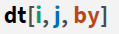
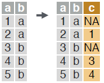

Fast Data Transformation with data.table
Basics
library(data.table)##
## Attaching package: 'data.table'## The following objects are masked from 'package:dplyr':
##
## between, first, last## The following object is masked from 'package:purrr':
##
## transposedata.table is an extremely fast and memory efficient package for transforming data in R. It works by converting R’s native data frame objects into data.tables with new and enhanced functionality. The basics of working with data.tables are:

- Take data.table dt,
- subset rows using i,
- manipulate columns with j,
- grouped according to by.
data.tables are also data frames – functions that work with data frames therefore also work with data.tables.
Create a data.table
create a data.table from scratch. Analogous to data.frame()
data.table(a = c(1, 2), b = c("a", "b"))## a b
## 1: 1 a
## 2: 2 bconvert a data frame or a list to a data.table.
as.data.table(df)
setDT(df)- SET FUNCTIONS AND := data.table’s functions prefixed with “set” and the operator “:=” work without “<-” to alter data without making copies in memory. E.g. the more efficient “setDT(df)” is analogous to “df <- as.data.table(df)”.
Subset rows using i
# subset rows based on row numbers.
dt[1:2, ] # subset rows based on values in one or more columns.
dt[a > 5, ] 
LOGICAL OPERATORS TO USE IN i
<, <=, >, >=, is.na(), !is.na(), %in%, !, |, &, %like%, %between%
Manipulate columns with j
EXTRACT
# extract column(s) by number. Prefix column numbers with “-” to drop.
dt[, c(2)] # extract b c b c column(s) by name.
dt[, .(b, c)] SUMMRIZE
# create a data.table with new columns based on the summarized values of rows.
dt[, .(x = sum(a))]Summary functions like mean(), median(), min(), max(), etc. may be used to summarize rows.
COMPUTE COLUMNS
# compute a column based on an expression.
dt[, c := 1 + 2]
# compute a column based on an expression but only for a subset of rows.
dt[a == 1, c := 1 + 2] # compute multiple columns based on separate expressions.
dt[, `:=`(c = 1 , d = 2)]DELETE COLUMN
# delete a column.
dt[, c := NULL] CONVERT COLUMN TYPE
# convert the type of a column using as.integer(), as.numeric(), as.character(), as.Date(), etc.
dt[, b := as.integer(b)] Group according to by
# group rows by values in specified column(s).
dt[, j, by = .(a)]# group and simultaneously sort rows according to values in specified column(s).
dt[, j, keyby = .(a)]COMMON GROUPED OPERATIONS
# summarize rows within groups.
dt[, .(c = sum(b)), by = a]
# create a new column and compute rows within groups.
dt[, c := sum(b), by = a] –
# extract first row of groups.
dt[, .SD[1], by = a]
# extract last row of groups.
dt[, .SD[.N], by = a]Chaining
dt[…][…]
perform a sequence of data.table operations by chaining multiple “[]”.
Functions for data.tables
REORDER
# reorder a data.table according to specified columns. Prefix column names with “-” for descending order.
setorder(dt, a, -b) 
UNIQUE ROWS
# extract unique rows based on columns specified in “by”. Leave out “by” to use all columns.
unique(dt, by = c("a", "b"))# return the number of unique rows based on columns specified in “by”.
uniqueN(dt, by = c("a", "b"))RENAME COLUMNS
# rename column(s).
setnames(dt, c("a", "b"), c("x", "y")) SET KEYS
# set keys in a data.table to enable faster repeated lookups in specified column(s) using “dt[.(value), ]” or for merging without specifying merging columns “dt_a[dt_b]”.
setkey(dt, a, b)Combine data.tables
JOIN
# join two data.tables based on rows with equal values. You can leave out “on” if keys are already set.
dt_a[dt_b, on = .(b = y)]# join two data.tables based on rows with equal and unequal values.
dt_a[dt_b, on = .(b = y, c > z)]# rolling join matches rows, according to id columns, but only keeps the most recent preceding match with the left table, according to date columns. Use “roll = -Inf” to reverse direction.
dt_a[dt_b, on = .(id = id, date = date), roll = TRUE] BIND
# combine rows of two data.tables.
rbind(dt_a, dt_b)# combine columns of two data.tables.
cbind(dt_a, dt_b) Reshape a data.table
RESHAPE TO WIDE FORMAT
Reshape a data.table from long to wide format.
dcast(dt, id ~ y, value.var = c("a", "b"))- dt A data.table.
- id ~ y Formula with a LHS: id column(s) containing id(s) for multiple entries. And a RHS: column(s) with value(s) to spread in column headers.
- value.var Column(s) containing values to fill into cells.
RESHAPE TO LONG FORMAT
Reshape a data.table from wide to long format.
melt(dt, id.vars = c("id"),
measure = patterns("^a", "^b"),
variable.name = "y",
value.name = c("a", "b"))- dt A data.table.
- id.vars Id column(s) with id(s) for multiple entries.
- measure Column(s) containing values to fill into cells (often in pattern form).
- variable.name Name(s) of new column(s) for variables and values derived from old headers.
- value.name
.SD
Refer to a Subset of the Data with .SD.
MULTIPLE COLUMN TYPE CONVERSION
# convert the type of designated columns.
dt[, lapply(.SD, as.character), .SDcols = c("a", "b")]GROUP OPTIMA
within groups, extract rows with the maximum value in a specified column. Also works with which.min() and which(). Similar to “.SD[.N]” and “.SD[1]”.
dt[, .SD[which.max(a)], by = b]Sequential rows
ROW IDS
within groups, compute a column with sequential row IDs.
dt[, c := 1:.N, by = b]LAG & LEAD
within groups, duplicate a column with rows lagged by specified amount.
dt[, c := shift(a, 1), by = b]
within groups, duplicate a column with rows leading by specified amount.
dt[, c := shift(a, 1, type = "lead"), by = b]fread & fwrite
IMPORT
fread(“file.csv”) – read data from a flat file such as .csv or .tsv into R.
fread(“file.csv”, select = c(“a”, “b”)) – read specified column(s) from a flat file into R.
EXPORT
fwrite(dt, file = “file.csv”) – write data to a flat file from R.